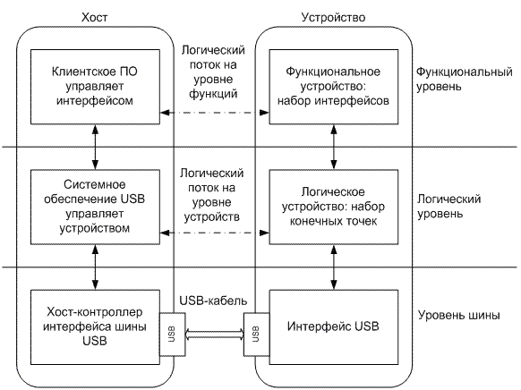
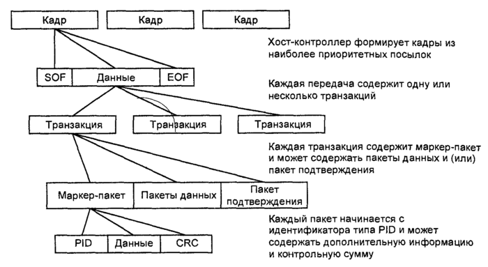
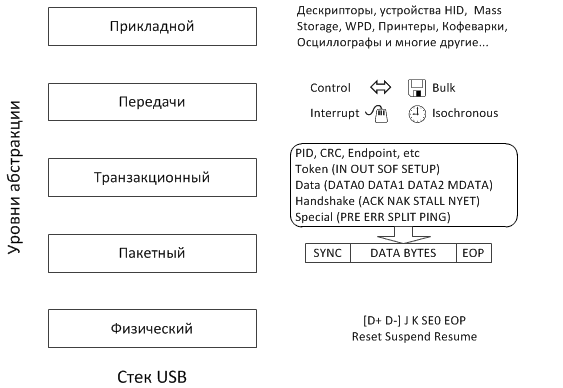
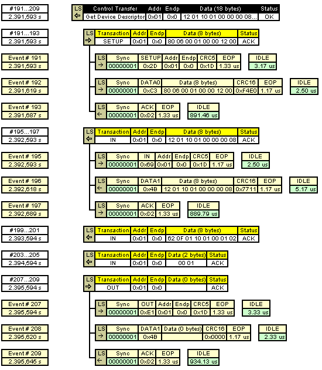

Разбираем и собираем обратно стек USB
(руководство)
Иллюстрированная проекция модели сетевого взаимодействия OSI на универсальную последовательную шину.
Три «замечательных» уровня стека USB
Меня не устроил вид стека USB, который можно встретить чаще всего на просторах сети:

Не сильно полезный стек USB
Уровень шины, логический, функциональный… Это, конечно, замечательные абстракции, но они скорее для тех, кто собирается делать драйвер или прикладной софт для хоста. На стороне же микроконтроллера я ожидаю шаблонный конечный автомат, в узлы которого мы обычно встраиваем свой полезный код, и он сперва будет по всем законам жанра глючить. Или же глючить будет софт на хосте. Или драйвер. В любом случае кто-то будет глючить. В библиотеках МК тоже с наскока не разобраться. И вот я смотрю на трафик по шине USB анализатором, где происходящие события на незнакомом языке с тремя замечательными уровнями вообще не вяжутся. Интересно, это у меня от гриппозной лихорадки в голове такой диссонанс?
Если у читателя бывали сходные ощущения, предлагаю альтернативное, явившееся мне неожиданно ясно в перегретом мозгу видение стека USB, по мотивам любимой 7-уровневой модели OSI. Я ограничился пятью уровнями:
Я не хочу сказать, что весь софт и библиотеки уже сделаны или должны проектироваться, исходя из этой модели. Из инженерных соображений код c уровнями будет сильно перемешан. Но я хочу помочь тем, кто начинает своё знакомство с шиной USB, кто хочет понять протоколы обмена устройств и терминологию предметной области, подобраться поближе к готовым примерам, библиотекам и лучше ориентироваться в них. Эта модель не для загрузки в МК, но в ваши блестящие умы, дорогие друзья. А ваши золотые руки потом всё сами сделают, я не сомневаюсь:)
Итак, поехали, поправляйте, если увидите косяки. Это draft-версия, и если уже такое где-то было нарисовано, прошу простить, я не нашёл и потому скрутил сам. Думаю, картинка никуда не убежит, а я пока объясню почтенной публике, зачем вообще взялся за эту публикацию.
Очередной флэшбэк из девяностых
Свой первый баг из чужого кода я вытряхнул в конце девяностых, будучи студентом на подработках. Это был pppd под FreeBSD, который мы тогда прикрутили на модемный пул. Мотороловские модемы залипали в отбое, дозвониться никто не мог, линия пропадала зазря, и единственный оставшийся способ через PPP keep-alive почему-то глючил. Вот тогда я и выяснил, что pppd зачем-то ждёт шесть ответных байтов LCP вместо положенных четырёх. Почувствовал я себя тогда эдаким лихим жукотрясом из девяностых:-) При чём тут PPP? Просто он на USB похож: пакетный и двухточечный. Правда, в отличие от USB 2.0, полнодуплексный.
Хотим мы этого или нет, но эволюция микроконтроллеров на месте стоять явно не собирается. Нет, нет, да и мелькнёт в публикациях (http://habrahabr.ru/post/208026/, http://habrahabr.ru/post/233391/) «тяжёлая периферия» — вмонтированные в МК реализации шины USB, с разборами примеров, использованием HID и т.п. Надо воздать должное автору RaJa: из восьми примеров, приведённых в стандартной библиотеке STSW-STM32121 (UM0424) и кое-как документированных, он выбрал самый полезный (Custom HID), портировал его в бесплатную среду Em::Blocks, изложил понятным языком, немного приукрасил, браво! Это сэкономило мне уйму времени.
Как пройти в библиотеку?
Получив на GitHub любезно выложенный автором проект RHIDDemo для Em::Blocks, я начал портировать его в Keil (мой отладчик CoLink на базе FTDI; кто-нибудь, подскажите плагин от Coocox для Em::Blocks). Но никак не мог понять: где, чёрт возьми, автор раздобыл SPL 3.6.1 выпуска 2012г, если на сайте выложен 3.5.0 от 2011г? Я прошёл довольно скучный квест, который к моему удивлению привёл… прямо на готовый проект Custom HID для Keil в составе библиотеки USB FS 4.0.0. Лежит у всех на виду, как мышь под веником. Ну и ладно. Зато я раскурил, наконец, релизы STMicroelectronics, нашёл описание библиотеки USB FS STSW-STM32121 (UM0424) и пресёк попытки разработчика свести меня с ума. Вот скажите, это нормально подкладывать винтажный CMSIS 1.30 образца 2009г в набор SPL 3.5.0 выпуска 2011г, новый SPL 3.6.1 релиза 2012г прятать в USB-FS 4.0.0 релиза 2013г (подложив туда же и CMSIS 3.0.1 от 2012г), при том, что у них же выложена актуальная версия CMSIS 3.30 релиза 2014г? Кстати, в SPL 3.6.x для STM32F10X исправили пару багов с USART, касающихся сигналов о переполнении буфера. Спасибо, хоть release notes оставили…
HID vs SNMP
Итак, взявшись за STM32F103C8T6, я тоже решил слегка задвинуться по теме USB HID, уж больно хорошо абстракция USB HID укладывается в концепцию всяческих датчиков, сенсоров и прочих ШИМ-управляемых драйверов питания. Чем-то напомнило мне SNMP, только в сильно упрощённом виде: дескрипторы HID играют роль SNMP MIB. Когда устройство инициализируется хостом: «Привет, хост! Я кофеварка. У меня есть кнопка [старт], регуляторы [сливки], [сахар], датчики [остаток кофе], [остаток воды], [остаток сахара], [остаток сливок]. Подтягивай драйвера, дави на кнопку, кофейку попьём». Ничего не напоминает? Пример диалога по SNMP: «Ну, привет, управляющая станция с софтом за $100000. А я шасси коммутатора за $200000, и на мне сидят ещё 4 модуля по $100000 за штуку; в каждом ещё по 16 портов с неприличной скоростью, и всех функций тут просто не перечислить… спрашивай отдельно по каждому пункту; ах, да загрузка процессора такая-то, памяти столько-то…». И ещё на дюжину страниц в таком же духе.
Понравилась мне идея HID. Но стоило выйти из Windows за рамки учебных задач мигания светодиодами (вперёд к реальным окружениям UNIX!), как начало сквозить из всех незаделанных щелей, и я почувствовал себя каким-то беспомощным ламером. Отлаживая проект, я инстинктивно схватился за некое подобие tcpdump (так и называется: usbdump(8), или usbmon), но увидел лишь сообщения на незнакомом языке.
Стало очевидно: не хватает фундаментальных знаний о шине USB. Если модель OSI и стек TCP/IP любой тёртый айтишник осознаёт где-то на уровне спинного мозга просто в силу необходимости, то с USB ситуация другая. Оно и понятно: там можно (нужно) подсмотреть трафик через тот же tcpdump да настроить железо с софтом, а тут полный plug and play, и исправить что-то можно, обновив драйвер или прошивку (или переустановив ОС). Но ведь мы тут с вами собрались как раз за тем, чтобы делать хорошие прошивки, не так ли? Почитав некоторые описания USB в сети, я был удивлён, насколько запутанной может быть документация. У меня даже возникло ощущение, что нас специально хотят сбить с пути истинного, напустив туману и избавившись от конкуренции в зародыше. Я не согласен с таким положением вещей!
Ещё одна замечательная схема
На просторах сети встретил ещё такую иллюстрацию (лежало в формате BMP, без шуток):

Сперва выглядит оптимистично. Наконец-то, стек в разобранном виде. Кадры, правда, обозначены неудачно: я бы нарисовал их вертикальными пунктирными линиями, а EOF — это просто пауза, реально данные не передаются. Но начинаем читать контекст и теряем понимаем истинный замысел автора (запутать нас):
Хост-контроллер интерфейса шины USB формирует кадры;
Кадры передаются последовательной передачей бит по методу NRZI.
И вот ещё:
каждый кадр состоит из наиболее приоритетных посылок, состав которых формирует драйвер хоста;
каждая передача состоит из одной или нескольких транзакций;
каждая транзакция состоит из пакетов;
каждый пакет состоит из идентификатора пакета, данных (если они есть) и контрольной суммы.
Вроде бы и нарисовано всё правильно, но по мере прочтения вопросов становится всё больше. Минимальная передаваемая структура данных по шине — это кадр или пакет? Вообще, это сверху вниз надо смотреть или наоборот? И что кодируется по методу NRZI — кадры, пакеты или просто весь битовый поток по шине? Из транзакций состоит посылка, передача, или, может быть, ценная бандероль какая?
Почему нельзя просто: хост группирует пакеты в транзакции и распределяет их по временным квантам, именуемым кадрами, чтобы давать приоритет критичным по времени данным (видео, аудио) исходя из текущей пропускной способности шины? Да, в USB есть нюансы с планированием передачи пакетов, я их пока не затрагиваю.
Моё видение стека USB
Хорошей документацией считаю упоминавшийся тут на хабре USB in a NutShell (ура, перевод), а также USB Made Simple. По ним я и собрал свою версию стека USB, нарисую её ещё раз.

Физический уровень
На физическом уровне используется набор электрических режимов дифференциальной пары проводников (вместе с землёй) для обозначения состояний, с помощью которых кодируется битовый поток по методу NRZI со вставкой битов (bit stuffing): здесь после шести идущих подряд «1» (ну захотелось передать, скажем, 0xffff) вставляется «0», чтобы приёмник подолгу не залипал в одном состоянии; приёмник узнает вставленный «0» и как данные не засчитает, это довольно распространённый приём в кодировании для лучшей автоподстройки частот. Пара проводов вместе с землёй даёт возможность сформировать, как минимум, четыре статических состояния (они обозначаются J, K, SE0, SE1). В USB 2.0 SE1 не используется, а три оставшихся дополнительно разыгрываются в динамике (с часами и переходами) для передачи ещё нескольких управляющих символов (границы пакетов, сброс, подключение/отключение, энергосбережение/выход). Хорошие иллюстрации есть в USB Made Simple, Part 3 — Data Flow.
Т.е. в итоге передаются данные в виде ноликов и единичек, плюс всякие управляющие символы, чтобы можно было из всей этой электродинамической кухни готовить нормальные пакеты данных.
Пакетный уровень
На пакетном уровне между хостом и устройством передаются безадресные пакеты (пара устройств на полудуплексной линии может обойтись и без адресации). Пакет состоит из маркера SYNC для синхронизации тактов приёмника, последовательности байт и символа EOP. Длина пакета переменная, но оговаривается через верхние уровни стека. Первый байт называется Packet Identifier (PID), имеет простой избыточный формат для помехоустойчивости и пригоден для скармливания автомату следующего уровня (для сборки транзакций из пакетов). Пакеты с начинкой (длиннее одного байта PID) снабжаются контрольной суммой (короткой CRC5 или длинной CRC16, в зависимости от типа пакета). Анализатор протоколов должен, как минимум, показывать нам пакеты.
Уровень транзакций
На следующем уровне из пакетов собираются транзакции. Транзакция — это малый набор пакетов (в Full Speed USB 1, 2 или 3), следующих строго друг за другом, которыми (в полудуплексном режиме) хост обменивается с оконечной точкой (endpoint), и только с одной. Очень важно, что транзакцию открывает только хост, это специфика USB (нам в прошивке МК меньше мороки). На уровне транзакций можно говорить о канале (pipe) между хостом и одной из оконечных точек устройства, но я намеренно избегаю термина «канальный уровень» (Data Link) из модели OSI. Анализатор протоколов должен хотя бы декодировать транзакции.
Уровень передач
Поверх транзакций расположим уровень передач (transfers). Их в USB используется четыре типа: контрольные с оконечной точкой №0 (control transfers), передачи с прерываниями (interrupt transfers), изохронные (isochronous transfers) и крупноблочные передачи (bulk transfers). Последние три являются вариантами потоковых каналов (stream pipe), про которые я ещё скажу несколько слов. Этот уровень тоже должен отобразить хороший анализатор протоколов.
Прикладной уровень
Венчает стек, как обычно, прикладной уровень. Здесь происходят: установка адреса устройству хостом, рассказ устройства о себе на языке дескрипторов, команды хоста на выбор конфигурации (контрольные передачи), обмен данными с HID-устройствами (в примерах пока нашёл передачу с прерываниями, хочу попробовать контрольную), печать на принтере и сканирование, доступ к накопителю USB (крупноблочные), общение через гарнитуры и веб-камеры (изохронные) и многие другие замечательные вещи.
Последний штрих
На самом деле это почти всё, что я хотел разсказать. Сбежав секунду вниз по уровням, можно добавить, что хост периодически вбрасывает по шине те самые пакеты Start of Frame (SOF), разбивая время на равные интервалы, но так, чтобы не разбить при этом сами транзакции. Поэтому пакеты SOF можно считать самостоятельными транзакциями. Не следует путать кадр (фрейм) USB с омонимом канального уровня модели OSI. Лучше уж вспомнить кадры (фреймы) аудио CD, это просто квант времени: хост «тикает» в шину пакетами SOF, чтобы подключённые устройства заранее планировали участие в т.н. изохронных передачах, гоняющих потоки данных в реальном времени. Ну или вот так: группы транзакций планируются хостом по временным интервалам, именуемым кадрами. Кадр составляет 1мс на Full Speed и 125мкс на High Speed USB, но High Speed — более сложный стандарт, его лучше изучать отдельно.
UPD: Хороший вопрос задали читатели: а как насчёт фрагментации? Я не нашёл в USB 2.0 признаков фрагментации на уровне транзакций и ниже, т.е. транзакции для того и есть, чтобы передаваться целиком. Передачи же в ряде случаев могут и должны разбиваться на несколько транзакций, особенно с учётом изохронных режимов. И я повторю, что всем планированием у нас пока заведует хост (на стороне МК меньше думать приходится).
Смотрим на трафик по USB
Хорошая подборка иллюстраций есть в упомянутой книжке USB Made Simple, глава 5: www.usbmadesimple.co.uk/ums_5.htm
Вот одна из них:

Итак, транзакция всегда инициируется хостом в отношении одной выбранной оконечной точки на устройстве (помимо специальной точки с номером 0, их может быть ещё до 15 штук на одном устройстве, например, комбинированная клавиатура с мышью, термометром, флэшкой, кофеваркой и кнопкой вызова сантехника заказа пиццы).
В случае приёма хостом данных с устройства последнее не может само открыть транзакцию, но может только дождаться нужного момента и поучаствовать в ней. Хост открывает транзакцию устройству пакетом с PID = IN (группа Token) и гарантирует на нужное время свободу шины, устройство вбрасывает пакет из группы Data, в зависимости от типа транзакции хост может подтвердить успех третьим пакетом из группы Handshake (ACK, NAK, STALL, NYET), транзакция закрыта.
При отправке данных на устройство (PID = OUT, группа Token) хост открывает транзакцию, отправляет пакет с данными (Data), также в зависимости от режима может принять пакет Handshake с подтверждением успешности транзакции.
По окончании транзакции всё вернётся на круги своя, устройство снова будет ждать управляющих пакетов от хоста.
Режимы передачи USB в примерах STM32 USB FS
Чтобы по одной паре проводов можно было гнать копирование с диска одновременно с аудио-видео потоком, жестами мышью и сигналом скоростного осциллографа, существуют разные типы сообщений и передач.
Чуть выше я только что описал простой потоковый канал (Stream Pipe) между хостом и оконечной точкой, где пакеты с начинкой (группы Data) не несут никакой специальной или управляющей информации самой подсистеме USB. Полная свобода переписки, библиотека контроллера должны предоставлять примитивы для закачки буфера произвольного размера из памяти МК хосту или обратно. Нарезкой на пакеты, пересылкой и «дефрагментацией» пусть занимаются библиотека МК на пару с драйвером хоста. В STM32 это USB_SIL_Write() и USB_SIL_Read(), описаны в UM0424. Они и есть тот самый логический уровень абстракции. На стороне хоста см. описание соответствующего драйвера (например, во FreeBSD это ugen(4)).
Однако использовать тяжёлую периферию вроде USB для организации простого потокового канала я считаю кощунством (спрашивается: чем USART не угодил?). Но ситуации, конечно, бывают всякие.
В любом случае, чтобы подсистема USB вообще ожила и устройство определилось, требуется обмен контрольными транзакциями.
DISCLAIMER
Дальше будут упоминаться примеры из той самой библиотеки UM0424 для работы с Full Speed USB от STMicroelectronics, но они рассчитаны под их родные демоплаты. Берите пример с автора Raja, проявляйте инженерную смекалку в адаптации проектов под свою демоплату.
По софту всё понятно: это примеры не для промышленного использования, там могут быть баги, некоторые части (типа таблицы ссылок в примере Mass storage) защищены патентом, и вы не имеете прав их использовать в коммерческом проекте. Но это ещё ничего, китайцы ухитряются потом продавать на рынке USB-изделия, у которых даже библиотечные VID и PID не удосужились поменять.
По железу, как я понял, надо начинать с кварца. У меня челябинский PinBoard II с кварцем 12Мгц (все библиотеки заточены под 8МГц), я менял умножитель ФАПЧ с 9 на 6 (ссылка с разъяснениями), иначе МК разгонится до 108МГц вместо 72МГц, а USB на 72МГц вместо положенных 48МГц вообще не поедет. Можно ещё сбавить обороты МК до 48МГц, поменяв делитель шины USB с полутора до единицы. Использовать внутренний генератор МК HSI спецы не любят: частота может слегка уплыть от нагрева, последствия для USB предсказать затрудняюсь. Ну и не забываем о периферии, конечно. Без флэш-памяти SPI/SDIO из примера Mass storage можно сделать разве что аналог /dev/null, но его ведь хрен отформатируешь:-)
Контрольные передачи и каналы сообщений
Думая про USB, вспоминаю добрый старый протокол PPP с его LCP, IPCP, CCP и ещё хзCP. Обмен хоста с оконечной точкой №0 сообщениями особого вида и есть местный эквивалент xзCP.
Через контрольные передачи устройство инициализируется, получает адрес, рассказывает о себе хосту на языке дескрипторов (чтобы тот подыскал и активировал нужный драйвер). Без контрольных операций не «поедут» и простые потоковые передачи, если устройство не ответит по форме, хост поскорее заглушит порт: протокол надо соблюдать.
В принципе, протокол не запрещает повесить на контрольную точку №0 и обмен данными, аналогично режиму с прерываниями. Заодно задумайтесь: как будете обновлять прошивку МК, так сказать, в полевых условиях? Программатор наготове держать? Есть и другое решение.
Пример: Device firmware upgrade
Передачи с прерываниями
Эта разновидность (interrupt transfer) предназначена для обмена небольшими транзакциями, сходными с контрольными. Нет, устройство не может прерывать хоста, оно ждёт опроса, их частота и размеры пакетов оговариваются заранее в дескрипторе устройства. Хорошо подходят для всевозможных пультов, датчиков, сенсоров, мышек, светодиодов и прочих HID-кофеварок. Канал с прерываниями каждой точки однонаправленный.
Примеры: Custom HID, Joystick mouse, Virtual COM port
Передачи изохронные
Χρόνος по-гречески значит «время». Изохронная передача (isochronous transfer) — местный хайтек, позволяющий управлять потоками данных в реальном времени. Отличается гарантированной (но необязательно широкой) полосой пропускания и отсутствием подтверждающих транзакций, почти как UDP с QoS. Битый пакет? Это бог Хронос толкнул МК по ноге. Не надо пытаться отправить пакет заново, иначе бог огорчится. Контрольные суммы, тем не менее, проверяем втихую от Хроноса. Изохронные передачи хороши для аудио-видео и измерительных систем реального времени, а также прочих игрушек двойного назначения. Хотя на некоторые из них м.б. интереснее повесить какой-нибудь AVR, связав его с нашим ARM по USART или SPI. Изохронные операции участвуют во фреймовой сигнализации (вспомним про тиканье пакетом SOF).
Пример: USB voice speaker
Передачи крупноблочные
Нет, мешки с цементом таскать не будем. Я думаю, все узнали режим работы всевозможных накопителей USB. Передачи bulk transfer имеют цель отправить данных как можно больше и быстрее, обязательно с пересылкой битых пакетов, но без гарантий по полосе пропускания, уступая её изохронным передачам при необходимости (как в TCP без QoS). О внутреннем устройстве USB флэшек я как-то уже рассказывал, теперь можно скачать и запустить действующий прототип. Я сам его не пробовал, но таблица команд SCSI в описании примера (как-бы, между прочим) весьма символизирует. Признаков алгоритма управления износом для NAND-памяти я не нашёл:-)
ВНИМАНИЕ: местами действует патентная защита STM.
Пример: Mass storage
Что осталось нераскрытым
Я не имею цель сделать ещё один учебник по USB, их и без меня хватает, и там хорошо описаны: электрическая часть, подробности протоколов, работа с концентраторами, дескрипторный язык и уровень абстракции HID, проблемы с уникальностью VID/PID, USB 3.0 и многие другие замечательные возможности шины USB, как полезные нам, так и не очень. Айтишникам особо рекомендую экскурсию на тёмную сторону с обзором вражеских девайсов (флэшка с замаскированной HID-клавиатурой, которая будет делать страшные вещи).
Ссылки
Адаптация примера Custom HID к бесплатной среде Em::Blocks и бюджетной демо-плате STM32F103C8T6 производства LC-Tech: habrahabr.ru/post/208026/
Битва за ИБП: habrahabr.ru/post/233391/ ещё одна битва за ИБП: habrahabr.ru/post/233391/#comment_7944489
Экскурсия на тёмную сторону (шпионский девайс из AVR): habrahabr.ru/post/153571/
Инструкции по анализу USB в Wireshark для Windows и Linux: wiki.wireshark.org/CaptureSetup/USB
Книжка USB in a NutShell: www.beyondlogic.org/usbnutshell/usb1.shtml
Перевод USB in a NutShell: microsin.ru/content/view/1107/44/
Книжка USB Made Simple (действительно упростили): www.usbmadesimple.co.uk
STSW-STM32121, библиотека STMicroelectronics USB full speed device library и все упомянутые примеры (UM0424) www.st.com/web/en/catalog/tools/PF258157
P.S. Читая публикации на хабре, посвящённые в той или иной степени микроэлектронике, я разглядел две инженерных касты, назовём их условно: Промэлектронщики и Айтишники. Это своего рода инженерный Инь и Ян, в каждом из нас есть доля того и другого.
Промэлектронщики имеют блестящие знания и навыки по железу, паяют радиодетали толщиной с волос левой рукой с закрытыми глазами (причём потом это работает). Взглянув на электронную схему, почти физически начинают ощущать все её токи с потенциалами, работают также и с силовыми схемами, и с (большими, быстрыми, опасными) промышленными изделиями. Подход к программированию МК соответствующий: он просто должен выдать нужные логические уровни на нужные ножки в нужное время, не столь важно каким способом. Консервативны в технологиях (не влезай — работает), тяжёлую периферию МК не особо жалуют. При обсуждении объектно-ориентированного программирования, информационной безопасности, гигантских проектов в миллион строк кода и всяких навороченных графических интерфейсов скучнеют. Вместо пакетно-ориентированной шины USB предпочитают потоковый режим USART, усиленный либо привычным RS-232, либо более брутальным RS-485 (последовательная шина для промышленных применений, до 10Мбит/с на 15м, до 100кБит/с на 1200м, до 32 устройств).
Айтишники воспитаны на понимании операционных систем, сетевой инфраструктуры и сложных взаимодействий, элита хорошо подкована в информационной безопасности и разбирается во всяких незримых способах проникновения в чужую систему. Некоторые при этом очень любят котиков (ну как их можно не любить? я, правда, не держу, не развожу и не готовлю:-). Многие любят свободу информации, ругать корпорации/правительства и побеждать силы природы усилием мысли. Паталогически ленивы, но обожают новые технологии и закрученные инженерные ребусы с дорогими игрушками (желательно решаемые на уровне софта или, в крайнем случае, перемычек). Отношения с паяльником настороженные: не спрашивайте у айтишника, любит ли он паяльник, может неправильно понять; лучше спросите, любит ли он паять электронные схемы.
К чему я? Мы просто видим этот мир по-разному… Ведь ядро Linux кроили такие же ребята, из модулей на С и ассемблерных вставок для конкретных платформ, и без холиваров вроде обошлись. По-настоящему серьёзный проект я вижу как многоядерную систему, сочетающую современнейшие МК с тяжёлой периферией, но не исключаю связки с классическими моделями типа AVR: ими можно обвесить какие-нибудь критичные быстровращающиеся острия технического прогресса. Если код проверенный годами, то почему нет?